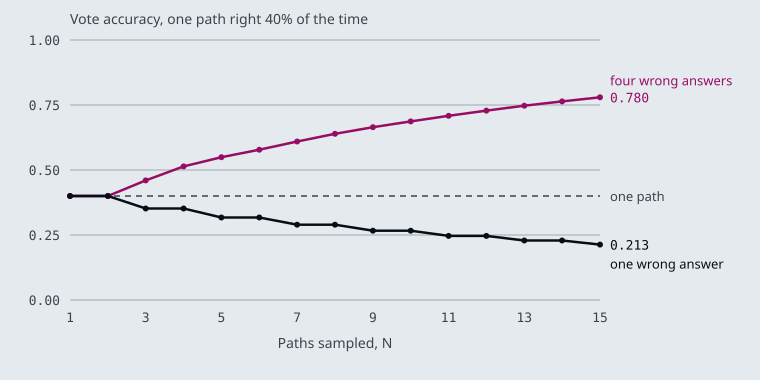

The notebooks use their own material: news headlines, product reviews, phone fact sheets and an NFL game summary. These pages carry each pattern over to the Larkspur Cloud handbook from M10 to M12, as the prompts a support assistant over that handbook would run: grading whether a chunk answers How long does a refund take?, computing the refund for Can I get a refund after 45 days?, and searching the handbook for Can I export my data after I cancel my plan?
TL;DR
- A few-shot prompt teaches the label set and the output format by example. Every example is sent on every call: the notebook’s three-example news classifier is 321 tokens, against 31 for the zero-shot version.
- Chain-of-thought asks for the steps before the answer. In few-shot CoT the model copies the exemplar’s reasoning, mistakes included; two of the notebook’s exemplars contain a wrong step.
- Self-consistency samples several reasoning paths and keeps the most common answer. It helps when wrong answers scatter and hurts when they agree: at one-path accuracy 0.40, a 15-path vote reaches 0.780 with four distinct wrong answers and falls to 0.213 on a yes/no question.
- ReAct interleaves Thought, Action and Observation until the model can answer. With tool calling, the Action is a structured call the framework runs; the Thought and Action lines in the system prompt are guidance, not a format anything parses.
- A prompt set is a test asset. Keep it fixed, change the model, and score the outputs against your own labels.
Mental model
- A customer asks “Can I get a refund after 45 days?”
- A template prompt with worked examples turns the question into a search query.
- The retriever returns handbook chunks. This is the one step with no prompt.
- A few-shot prompt labels each chunk yes or no: does it help answer the question?
- A support-agent persona and a reasoning cue answer from the chunks graded yes.
- The answer cites the chunks it used. Three of the four steps between question and answer were prompts.
Three of the four steps between the question and the answer are prompts, and each is assembled from the patterns in this module. When the pipeline gives a wrong answer, the fault sits in one of those prompts or in retrieval, and each can be tested on its own against a labelled set.
A grader that never saw a hard case
Lesson 4.1: Core prompt patterns. Notebooks: 01a_prompt_engineering_patterns.ipynb
What you’ll learn
- Explain what few-shot examples teach a model that the instruction leaves open.
- Count what those examples cost on every call, and how a RAG grader multiplies that cost.
- Diagnose a few-shot prompt whose examples only cover easy boundaries.
- Choose among persona, flipped interaction, directional stimulus, template and meta language for a given step.
M03 called hosted models and wrapped one in a demo. This module looks at the text we send them. Every LLM step in a RAG pipeline is a prompt: the query rewrite, the relevance grade, the route and the final answer. A prompt pattern is a reusable way to write one of those steps.
Take the Larkspur Cloud support assistant from M10. After retrieval, a grading prompt reads each retrieved chunk and answers yes or no: does this passage answer the question? A customer asks How long does a refund take? The grader sees the billing chunk, which talks about when plans are charged, and says yes. It sees the chunk that says refunds take 5 to 10 business days to appear on your statement, and says no, because the passage never uses the words “how long”.
Both mistakes come from the same place. The grader’s examples showed it one passage that answers and one on an unrelated topic, and nothing in between. This page explains what examples teach, what they cost, and the five other patterns notebook 01a uses to shape a reply.
Few-shot
An N-shot prompt puts N solved examples in front of the real input. Zero-shot gives only the instruction, one-shot adds one example, and few-shot adds several. The model reads the examples as a pattern to continue, and its reply copies their labels, their format and their judgement.
The parts of a few-shot prompt sit in a fixed order:
flowchart LR
I["Instruction<br/>+ label set"] --> E1["Example 1<br/>input + label"]
E1 --> E2["Examples 2 to N"]
E2 --> X["Real input<br/>label left blank"]
X --> R[/"Reply:<br/>one label"/]
Figure 1: The anatomy of an N-shot prompt. The blank label after the real input is the slot the model fills.
Notebook 01a runs all three forms on the same news classifier with gpt-4o-mini at temperature 0. We counted the prompt tokens of each with tiktoken in the o200k_base encoding that gpt-4o-mini uses:
| Prompt in 01a | Examples | Tokens sent |
|---|---|---|
| Zero-shot: four categories and one article | 0 | 31 |
| One-shot: one labelled headline, then the article | 1 | 55 |
| Few-shot: three labelled articles, then the article | 3 | 321 |
Table 1: Prompt size of the three news classifiers (the notebook’s prompts, counted in the scratchpad with no model call).
What the examples teach
The examples carry three things the instruction leaves open:
- The label set and its spelling. The zero-shot prompt lists
sports, business, entertainment, technologyin lower case; the one-shot and few-shot prompts list them capitalised and show capitalised answers. Code that compares the reply against a fixed string depends on that detail. We call a mismatch here label drift. - The output shape. Each example ends
OUTPUT: SportsorCategory: Sports, and the model learns to reply with the bare label and stop. - Where the boundaries are. A phone launch is Technology; a company’s revenue mix is Business. Examples near a boundary teach more than examples in the middle of a class.
Examples can also leave gaps. The notebook’s three cover Sports, Technology and Business, and Entertainment, the fourth label, has no example at all. That is a missing-label gap: the model knows the word from the instruction but has never seen what an Entertainment article looks like in this prompt.
What the examples cost
Examples are sent on every call. The few-shot classifier sends ten times the tokens of the zero-shot one for the same single label. In a RAG grader the cost multiplies again, because the grader runs once per retrieved chunk:
| Quantity | Value | Source |
|---|---|---|
| Extra tokens per call, few-shot over zero-shot | 321 minus 31 = 290 | Table 1 |
| Chunks graded per question | 4 | M10 TF-IDF baseline, k = 4 |
| Extra tokens per question | 4 × 290 = 1,160 | arithmetic |
| Extra tokens per 1,000 questions | 1,160,000 | arithmetic |
Table 2: What three examples of the classifier’s size would add to a per-chunk grader (illustrative volume of 1,000 questions).
Planted failure: the easy-boundary grader
Now back to Larkspur. Here are the two examples the failing grader had, and the two it needed. All four passages are real chunks of the Larkspur handbook:
| # | Question | Passage | Label | What it teaches |
|---|---|---|---|---|
| 1 | Can I export my data after I cancel my plan? | After a plan is cancelled, its data is kept for 30 days and then permanently deleted. Export it before that window closes. | yes | what an answer looks like |
| 2 | Can I export my data after I cancel my plan? | You can reboot a server from the console… | no | an unrelated topic is not an answer |
| 3 | How long does a refund take? | Monthly plans are billed at the start of each billing cycle… | no | a nearby topic is still not an answer |
| 4 | How long does a refund take? | Refunds go back to the original payment method and take 5 to 10 business days to appear on your statement. | yes | an answer can use other words |
Table 3: Grading examples. Rows 1 and 2 are the failing prompt; rows 3 and 4 are the cases it was missing.
Rows 1 and 2 only teach an easy boundary, because the “no” passage shares no topic with the question. We call this the easy-boundary grader. It passes topical near misses and rejects paraphrased answers, the two mistakes from the opening. Adding rows 3 and 4 puts examples on the real boundary and keeps yes and no balanced at two each.
Pitfall: tuning to one question. A fix that makes the refund question pass can break another. Measure the grader against your own labelled pairs before and after each change, which is the M04 lab brief: three grading prompts, 30 labelled pairs, agreement for each.
Few-shot fixes the label set and the boundary. The next five patterns shape other parts of the reply.
Five more patterns
Notebook 01a covers five more patterns, each a different way to constrain the reply:
- Persona: a role line sets the vocabulary, the audience and what counts as important. The notebook opens with Act as a marketing manager before a phone fact sheet. For Larkspur, Act as a Larkspur support agent who answers only from the handbook sets both the tone and the boundary.
- Flipped interaction: the model asks the questions. The notebook asks it to ask me one question at a time until it has enough to write a data science project plan, then answers seven of its questions. For Larkspur, a server-sizing assistant can ask about peak memory use before it recommends a plan.
- Directional stimulus: a hint steers the output without writing it. The notebook asks for a five-line summary of an article on generative AI with Hint: Generative AI history, data modalities, tools, applications, concerns. The hint list doubles as a checklist for grading the summary.
- Template: the prompt fixes the output fields. The notebook asks for learning activities as
ACTIVITY, TOPIC, RESOURCE, DIFFICULTY SCALE 1-5, NOTES, returned as JSON. Downstream code can parse the reply only if the model keeps the template; validate it before use. - Meta language: the prompt defines a notation and then uses it. In the notebook,
Business_Understanding,3 -> Data_Understanding,5 -> …means a step and its days, and the model expands each step into a day-by-day plan. A notation keeps a long instruction short, as long as the prompt explains it once.
The one pattern with state
The flipped interaction is the only pattern here that remembers. The notebook wraps the chain in RunnableWithMessageHistory, which keeps one message history per session id and sends the whole history back to the model on every turn:
sequenceDiagram
participant U as User
participant C as conv_chain
participant M as gpt-4o-mini
U->>C: Ask me questions, one at a time
C->>M: history + new input
M-->>U: First question
U->>C: Answer
C->>M: history + answer
M-->>U: Next question
Note over C: history grows every turn, stored per session_id
Figure 2: A flipped interaction. Each call carries every earlier question and answer.
That growth is a cost. The first call sends one message; the eighth sends seven earlier exchanges plus the new answer. We call this history creep: the prompt, and the bill, grow with every turn whether or not the old turns still matter.
The history also lives under one key. The notebook runs its whole conversation under the session id unused, and the history for that id is the only place the messages can be read back. A cell that reads a different history object finds it empty.
Choosing a pattern
Each pattern answers a different question about the reply. Ask them in this order:
flowchart TD
A{"Fixed labels or<br/>a fixed format?"} -- yes --> FS[Few-shot or template]
A -- no --> B{"Missing facts<br/>from the user?"}
B -- yes --> FI[Flipped interaction]
B -- no --> C{"Must cover<br/>named points?"}
C -- yes --> DS[Directional stimulus]
C -- no --> D{"Long, repeated<br/>structure?"}
D -- yes --> ML[Meta language]
D -- no --> P[Persona alone]
Figure 3: Pick the pattern that constrains the part of the reply you need to control. Persona combines with any of them.
The patterns differ in what they fix and what they cost:
| Pattern | What it fixes | Extra cost | Main risk |
|---|---|---|---|
| Few-shot | labels, format, boundaries | examples on every call | easy-boundary grader |
| Persona | tone, audience, scope | one line | a role the model over-plays |
| Flipped interaction | which facts get collected | history on every turn | history creep |
| Directional stimulus | which points get covered | a hint line | hints read as the whole answer |
| Template | output fields | a field list | a reply that breaks the template |
| Meta language | a long structure, compactly | one definition | a notation never explained |
Table 4: The six patterns of notebook 01a.
In practice: the refund grader
The Larkspur grader from the opening, rebuilt with these patterns:
- Persona and scope. One line: the grader judges only whether the passage answers the question, not whether the answer is good.
- Template. The reply is exactly
yesorno. Anything else counts as a parse failure, and a parse failure counts asno, which keeps a hedged reply from being read as approval. - Few-shot. The four examples of Table 3, two yes and two no, two of them on the boundary.
- Measure. Run it on 30 labelled pairs and compare its agreement with a zero-shot version. Keep the examples only if the agreement they buy is worth the tokens they add to every chunk.
What changes next: lesson 4.2 asks the model to reason before it answers, and shows when sampling several answers and voting helps a grader like this one, and when it hurts.
Key Takeaways
- Few-shot examples teach the label set, the output shape and the class boundaries. They are paid for on every call: the classifier’s three examples cost ten times the zero-shot tokens, and a per-chunk grader multiplies that by k.
- Put examples on the real boundary (a nearby topic that does not answer, an answer in other words), keep labels balanced, cover every label, and measure the prompt against your own labelled pairs.
- Persona, flipped interaction, directional stimulus, template and meta language each constrain a different part of the reply. Validate templated output before code uses it, and expect a stateful conversation to cost more each turn.
Check yourself
1. What do the few-shot examples teach the news classifier that its instruction leaves open, and what do they cost?
They teach the label set and its spelling, the output shape (the bare label, then stop) and where the boundaries between classes are. They cost tokens on every call: 321 for the few-shot prompt against 31 for the zero-shot one. A RAG grader runs once per retrieved chunk, which multiplies that cost by k.
2. The Larkspur grading prompt has one yes example and one no example on an unrelated topic. Which two examples should you add?
A nearby passage that does not answer, labelled no: the billing chunk for How long does a refund take?. And a passage that answers in other words, labelled yes: the one saying refunds take 5 to 10 business days to appear on your statement. The current no example only teaches an easy boundary; the two new ones sit on the real boundary and keep yes and no balanced.
3. A flipped-interaction assistant gets more expensive with every question it asks. Why?
It is the only one of these patterns with state. Each turn sends the whole conversation history for its session id back to the model, and the prompt grows with every question and answer. That is history creep: the cost rises whether or not the old turns still matter.
A question that needs steps
Lesson 4.2: Reasoning prompts: chain-of-thought, self-consistency, least-to-most, ReAct. Notebooks: 02a_advanced_prompt_engineering_patterns.ipynb
What you’ll learn
- Explain how chain-of-thought and least-to-most prompts change what comes before the answer.
- Diagnose a few-shot reasoning prompt whose worked examples contain a wrong step.
- Predict when a self-consistency vote raises accuracy and when it locks in a wrong answer.
- Describe the ReAct loop of thought, tool call and observation, and what actually stops it.
Lesson 4.1 shaped the reply with examples, personas and templates, each asking for an answer straight away. Some questions need intermediate steps first, and some need facts the model does not have.
A Larkspur customer asks Can I get a refund after 45 days? An assistant that answers in one breath tends to grab the nearest rule it remembers, the 30-day full refund, and reply “No”. The handbook has more to say. Monthly plans are never refundable. An annual plan gets a full refund within 30 days, and after day 30 it gets the unused whole months back, minus a 15% early-termination fee. The right answer depends on the plan and on the start date, and the start date is not in the handbook at all.
Chain-of-thought
A chain-of-thought (CoT) prompt asks the model to write its reasoning before the answer. The answer is then conditioned on the steps, and the steps are on the page for you to check.
Notebook 02a uses one test question for every variant: from a game summary, How many yards was the shortest valid field goal? The summary has a 35-yard field goal and a 31-yard one that was blocked. The right answer is 35; a model that skips the word “blocked” says 31.
The notebook asks for the reasoning in three ways:
| Variant | What the prompt adds |
|---|---|
| Zero-shot CoT | one instruction: Think step-by-step to get to your answer. Show your step-by-step reasoning and then the answer. |
| Few-shot CoT | worked examples with numbered steps (Step 1: Roger started with 5 balls.) for the model to copy |
| Least-to-most | an instruction to break down the problem first into sub problems, answer each sub problem sequentially, plus one worked example |
Table 1: The three ways notebook 02a asks for reasoning.
Planted failure: the copied mistake
In few-shot CoT the model copies the reasoning of the examples as well as their format, so every step of every example has to be right. Two examples in notebook 02a are not:
| Example | Step as written | What is wrong |
|---|---|---|
| Keystrokes to type 1 to 500 | 9 + 90 + 401 = 1392 keystrokes | those three numbers add up to 500, the count of numbers; the keystrokes are 9 × 1 + 90 × 2 + 401 × 3 = 1,392 |
| Longest field goal (least-to-most) | 28-yard, 57-yard and 59-yard which are all valid goals | its own text says the 28-yard kick was blocked; the answer, 59, survives only because the blocked kick was not the longest |
Table 2: Wrong steps inside the notebook’s worked examples (checked by hand against each example’s own text).
The field goal example teaches the exact mistake the test question checks for: counting a blocked kick as valid. We call this the copied mistake, and the only guard is to check each worked step, not only each final answer.
Least-to-most on the refund question
Least-to-most fits Larkspur questions that combine rules. Can I get a refund after 45 days? breaks into four subproblems, each answered in order:
flowchart TD
S1["1. Monthly or<br/>annual plan?"] --> S2["2. Inside the<br/>30-day window?"]
S2 --> S3["3. Rule after<br/>day 30"]
S3 --> S4["4. Unused<br/>whole months"]
S4 --> A[/Refund amount/]
Figure 1: The refund question as a chain of subproblems. Each answer feeds the next.
Each subproblem has its own source:
| # | Subproblem | Answer | Source |
|---|---|---|---|
| 1 | Which plan? | monthly plans are not refundable; annual plans continue | handbook, plus the customer’s account |
| 2 | Is day 45 inside the 30-day full-refund window? | no | handbook |
| 3 | Which rule applies after day 30? | prorated to the unused whole months, minus a 15% early-termination fee | handbook |
| 4 | How many whole months are unused? | depends on the purchase date | billing system |
Table 3: Least-to-most decomposition of the refund question.
Subproblems 1 and 4 cannot be solved by reasoning alone. They need a lookup, and a reasoning prompt has no way to make one. ReAct, at the end of this page, adds that.
Self-consistency
Self-consistency samples several chain-of-thought paths for the same question and keeps the answer most of them reach (Wang et al., 2022). One path can slip; if the slips land on different answers, the right answer still collects the most votes.
Notebook 02a builds it from three CoT chains run in parallel, all gpt-4o-mini, at temperatures 0, 0.5 and 0.9. A fourth call at temperature 0 reads the three paths and is told to aggregate, take the majority vote as needed:
flowchart LR
P[/Problem/] --> C1["Path 1<br/>temperature 0"]
P --> C2["Path 2<br/>temperature 0.5"]
P --> C3["Path 3<br/>temperature 0.9"]
C1 --> AG["Aggregator call<br/>majority vote"]
C2 --> AG
C3 --> AG
AG --> A[/Answer/]
Figure 2: Self-consistency in notebook 02a: three sampled paths and an LLM that merges them.
That is four calls where plain CoT makes one. The aggregator is itself a model call, and it can be talked round by a confident wrong path. For short answers that compare as strings or numbers, counting the votes in code does the same job with one call fewer.
When the vote helps
Whether the extra calls pay depends on how the wrong answers are spread. The interactive lab computes this exactly. It treats each path as an independent draw that is right with probability p and otherwise gives one of W equally likely wrong answers, then counts how often the most common answer is the right one, with ties split at random:
| One path right | Wrong answers | N = 1 | N = 3 | N = 5 | N = 15 |
|---|---|---|---|---|---|
| 0.60 | 1 (yes/no) | 0.600 | 0.648 | 0.683 | 0.787 |
| 0.40 | 1 (yes/no) | 0.400 | 0.352 | 0.317 | 0.213 |
| 0.40 | 4 | 0.400 | 0.460 | 0.549 | 0.780 |
| 0.60 | 4 | 0.600 | 0.720 | 0.835 | 0.987 |
Table 4: Vote accuracy from the lab (values the lab prints at these settings, checked against a Python port of its formula).
The curves for a path that is right 40% of the time:

Figure 3: One accuracy, two outcomes. Scattered errors lift the vote; a single shared error sinks it.
Three rules follow from the table:
- A vote amplifies whatever answer is most common. If one path is right more often than any single wrong answer, more paths help. If not, the vote makes the wrong answer look certain. We call this the confident wrong vote: a yes/no grader that is right 40% of the time drops to 0.213 with 15 votes.
- Scattered errors are where voting pays. With four distinct wrong answers, a path that is right only 40% of the time still wins the vote 78% of the time at N = 15, because no single wrong answer gathers enough votes. A computed figure such as a prorated refund behaves like this; a yes/no grade never does.
- On two labels, use an odd N. An even N can split evenly, and a split is a coin flip. N = 4 scores exactly what N = 3 scores (0.648 at
p= 0.60) for one more call.
The lab’s independence assumption is the best case. Paths from one model share its blind spots and agree on the same wrong answer more often than independent draws, which shrinks the gain; a path at temperature 0 repeats the most likely path rather than sampling a new one. For a measured case where the wrong answers clustered on one value, see M25’s self-consistency page.
ReAct format
ReAct prompts the model to alternate reasoning with actions (Yao et al., 2022): a Thought, an Action with its input, the Observation the action returns, and another Thought, until it can write a Final Answer.
Notebook 02a puts that format in its system prompt, one labelled line per part:
| Line | What the prompt asks for |
|---|---|
| Thought | what to do next |
| Action | the action to take: break the task down, use trained knowledge, or call the tool search_web |
| Action Input | the input to the action |
| Observation | the result of the action |
| (repeat) | Thought, Action, Action Input and Observation can repeat N times |
| Final Answer | the answer to the original question, after I now know the final answer |
Table 5: The ReAct format as notebook 02a’s system prompt states it.
The loop those lines describe:
- A customer asks “Can I export my data after I cancel my plan?”
- The model reasons that the handbook holds the answer and that it should search it.
- It names a tool and its input. With tool calling this is a structured call, not a line of text to parse.
- The tool runs and returns the export and retention chunks: exports from Settings, data kept 30 days after cancelling.
- The next Thought reads the Observation and decides the evidence is enough.
- The Final Answer: yes, export from Settings, then Data, within 30 days of cancelling.
Figure 4: The ReAct loop. Each Observation goes back into the next Thought until the model answers.
What the framework actually runs
The notebook’s tool, search_web, takes the top five DuckDuckGo results, fetches each page and returns its text. The agent is gpt-4o built with create_tool_calling_agent and run by AgentExecutor. That combination changes what the format means:
- The Action is a tool call, not text. The model is given the tool’s schema and returns a structured tool call with the tool name and arguments. The agent runs it and feeds the result back as a tool message. Nothing parses an
Action:line, and thePAUSEthe system prompt mentions has no effect. - The Thought lines are guidance. They ask the model to plan and to check the Observation before answering. The model may write them, or may call the tool straight away.
- The loop needs a stop.
AgentExecutorends the run when the model replies without a tool call, or aftermax_iterations(15 by default).
Each of those rules shows up as a failure you can plant:
| Planted case | What the agent returns | Why |
|---|---|---|
Reply text says Action: search_web but carries no tool call |
that text, as the final answer | a reply with no tool call ends the run |
| The search keeps returning the same pages and the model keeps searching | Agent stopped due to iteration limit or time limit. after 15 rounds | the default stop forces an end |
| One result page never responds | the tool hangs | the fetch has no timeout |
Table 6: Planted ReAct failures and the rule behind each (behaviour read from the installed agent code and the notebook’s tool; no model call).
We call the second case the runaway loop. It usually means the evidence is not where the agent is looking, and the right end is an “I don’t know”, not a sixteenth search.
The notebook first asks about LangGraph with no tool, and its own comment expects the model to decline or make up an answer; the agent then answers from the pages search_web fetched.
For Larkspur the tool is a handbook search. Can I export my data after I cancel my plan? takes one round: the search returns the export and retention chunks, and the answer is to export from Settings, then Data, within 30 days of cancelling. The refund question takes two tools, the handbook for the rules and the customer’s billing record for the plan and purchase date. M22 and M23 build this loop in LangGraph.
Choosing a reasoning prompt
The cheapest prompt that covers the question wins:
flowchart TD
A{"Needs facts the<br/>model lacks?"} -- yes --> R[ReAct with a tool]
A -- no --> B{"Several dependent<br/>subproblems?"}
B -- yes --> L[Least-to-most]
B -- no --> C{"Short answer, errors<br/>that scatter?"}
C -- yes --> S[Self-consistency]
C -- no --> T[Chain-of-thought]
Figure 5: Pick a reasoning prompt by what the question needs.
| Prompt | Calls per question | Fixes | Main risk |
|---|---|---|---|
| Chain-of-thought | 1 | skipped steps | copied mistake in examples |
| Least-to-most | 1 | rules applied out of order | a subproblem that needs data |
| Self-consistency | N + 1 with an LLM aggregator, N with a code vote | slips that land on different answers | confident wrong vote |
| ReAct | one per round, up to the iteration limit | missing facts | runaway loop |
Table 7: The four reasoning prompts compared.
References
- Wang, X. et al. (2022). Self-Consistency Improves Chain of Thought Reasoning in Language Models. arXiv:2203.11171.
- Yao, S. et al. (2022). ReAct: Synergizing Reasoning and Acting in Language Models. arXiv:2210.03629.
Key Takeaways
- Chain-of-thought puts the reasoning on the page before the answer. In few-shot form the model copies the examples’ reasoning, so check every step of every example, not only the final answers.
- Self-consistency votes over several paths and amplifies the most common answer. It pays when errors scatter, as computed figures do, and makes a weak yes/no grader worse.
- In a tool-calling agent the action is a structured tool call, a reply with none ends the run, and an iteration limit stops a runaway loop. Use ReAct when a subproblem needs a lookup that reasoning alone cannot supply.
Check yourself
1. Why does the least-to-most example in notebook 02a make the field goal test harder to pass?
In few-shot chain-of-thought the model copies the reasoning of the examples, not only their format. That example lists a 28-yard kick as valid although its own text says it was blocked; its answer survives only because that kick was not the longest. It teaches the exact mistake the test checks for: counting the blocked 31-yard kick and answering 31 instead of 35.
2. A yes/no grader path is right 40% of the time. What does a 15-path majority vote score, and how would four distinct wrong answers change that?
0.213, worse than a single path’s 0.400: the one wrong answer is more common than the right one, and the vote amplifies it. With four equally likely wrong answers the same 40% path wins the vote 78% of the time (0.780), because no single wrong answer gathers enough votes. These figures assume independent paths, the best case; paths from one model share blind spots and gain less.
3. A ReAct agent built with create_tool_calling_agent replies with text that says Action: search_web, but no search runs. Why?
The action is a structured tool call, not text, and nothing parses an Action: line. AgentExecutor takes a reply with no tool call as the final answer, even if its text says Action:, and ends the run there.
A model swap with no test set
Lesson 4.3: The same tasks across models. Notebooks: 03a_openai_gpt_4o_mini.ipynb, 03b_google_gemini_1_5_flash.ipynb (optional), 03c_meta_llama_3_2_90b_groq.ipynb (optional), 03d_meta_llama_3_2_1b_huggingface.ipynb (optional)
What you’ll learn
- Explain why a fixed prompt set and one swappable wrapper make a fair model comparison.
- Choose a check for each kind of task, from exact match to a support judgement.
- Diagnose a comparison that rests on reading replies by eye or on a tiny, leaky test set.
- Adapt a closed-domain question-answering prompt into the answer step of a RAG pipeline.
Lessons 4.1 and 4.2 built prompts for one model. A prompt is written against a model, though, and models change: a cheaper one appears, a provider retires an id, a team wants an open model it can host.
Suppose the Larkspur team moves its support assistant from gpt-4o-mini to a cheaper model. Someone sends five handbook questions to the new model, reads the replies, finds them fluent and ships the change. A week later the answer step is filling gaps in the handbook with general knowledge (illustrative). No check measured whether each answer stayed inside the retrieved passages.
The four notebooks of this lesson show the setup that catches it: one fixed prompt set, one wrapper per provider, and a score per task.
One prompt set across four APIs
The four notebooks run the same ten tasks: zero-shot and few-shot classification, Python and SQL generation, information extraction from a clinical note, closed-domain and open-domain question answering, summarisation, turning a fact sheet into an FAQ, and translation.
Each notebook defines one function, get_completion(prompt, model), and every task calls it. Only that function changes between notebooks:
| Notebook | Model | Client the notebook installs |
|---|---|---|
| 03a | gpt-4o-mini |
openai==1.55.3, Chat Completions |
| 03b | gemini-1.5-flash |
google-generativeai==0.8.3, generate_content |
| 03c | llama-3.2-90b-vision-preview |
groq==0.13.0, Chat Completions |
| 03d | meta-llama/Llama-3.2-1B-Instruct |
huggingface_hub InferenceClient |
Table 1: The wrapper is the only part that changes.
All four set temperature 0, and 03d caps replies at 2,048 tokens. 03d’s first test call goes to a different model, microsoft/Phi-3.5-mini-instruct; its ten tasks all use the Llama default. The prompt text is identical in 03a, 03c and 03d. 03b adds one prompt, a second LangGraph question ending If you are not able to find the answer in your trained knowledge just say you don’t know, and for that task its run answers a different prompt.
The structure in one picture:
flowchart LR
PS["Prompt set<br/>fixed text"] --> GC["get_completion<br/>one per provider"]
GC --> M["Model<br/>temperature 0"]
M --> OUT["Outputs<br/>per task"]
OUT --> SC["Score against<br/>your labels"]
Figure 1: The prompt set is the fixed part and the wrapper is the swap point. The last box is the one the notebooks leave to you.
Three practices make the comparison worth trusting.
Score, do not eyeball
The notebooks print each reply. A comparison needs a check per task, decided before the run. Several tasks carry their own answer key in the prompt or its context:
| Task | Check | Expected |
|---|---|---|
| 1. Zero-shot sentiment | exact match on one of three labels | speaker review Positive, blender review Negative |
| 5. Clinical note | match against a labelled symptom list | sore throat and tongue swelling present; chest pain, itching, nausea absent |
| 6. Closed QA, mortgage | number match | 12% (£668.51 to £748.94) |
| 6. Closed QA, salary | exact match, number only | 54 |
| 8. Summary | starts with Summary, at most 5 lines | format check |
| 9. FAQ | at most 8 question and answer pairs | count check |
| 10. Translation | German and Spanish both present | presence check, then a reader |
Table 2: A check per task. Expected answers come from the notebooks’ own inputs, checked by hand.
Different outputs call for different checks. Ask in this order:
flowchart TD
A{"Fixed label<br/>or number?"} -- yes --> EM[Exact match]
A -- no --> B{"Fixed format<br/>or length?"}
B -- yes --> FC[Format check]
B -- no --> C{"Grounded in<br/>given context?"}
C -- yes --> SJ[Support judgement]
C -- no --> HJ[Human or LLM judge]
Figure 2: The cheapest check that can fail a wrong reply.
Planted failure: the leaky two-review test
The sentiment tasks show how a test set can mislead. Task 1 asks for Positive, Negative or Neutral. Task 2, the few-shot version, switches the labels to 😊 and 😡 and gives no Neutral example. Its two examples open with the same words as the two reviews under test (Just received the… and Needed a new…), and the test set is two reviews long:
| Problem | Effect on the comparison |
|---|---|
| Labels change between tasks | an exact-match scorer needs a mapping, or both tasks score zero |
| Examples echo the test inputs | the model can match on wording rather than sentiment |
| Two test items | each model scores 0%, 50% or 100%; no difference between models is readable |
Table 3: Three ways the sentiment tasks would mislead a scorer.
We call this the leaky test: the examples share text with the inputs, and the inputs are too few to separate models. A model comparison needs its own labelled cases, kept apart from any examples in the prompt. That is the M04 lab brief on a small scale: 30 labelled pairs, agreement per prompt.
Keep the model id in one place
Provider ids are retired. Groq shut down llama-3.2-90b-vision-preview on 14 April 2025 and names meta-llama/llama-4-scout-17b-16e-instruct as the replacement (Groq deprecations, checked 9 November 2026). Notebook 03c and the Llama half of notebook 04a call that id and fail until it is changed. We call this id rot. With the id inside get_completion, the fix is one line.
Access can also change. The 1B model in 03d is gated: the notebook asks you to request access from Meta on Hugging Face before the first call works.
Read the prompt as each model will
Task 6, closed-domain QA, gives a survey report as context and asks the model to answer to the best of your ability. That wording invites the model’s own knowledge. In a RAG pipeline the same prompt needs an instruction to answer only from the context, and to say so when the context does not contain the answer. That is the line 03b adds to its extra prompt.
In practice: the answer step
The closed-domain prompt becomes the answer step of the Larkspur pipeline. It has four parts:
| Part | Content |
|---|---|
| Instruction | answer the customer’s question using only the handbook passages below |
| Refusal line | if the passages do not contain the answer, reply The handbook does not cover this. |
| Passages | the retrieved chunks, inside delimiters |
| Question | the customer’s question, then an empty Answer: slot |
Table 4: The Larkspur answer prompt, adapted from task 6.
To compare candidate models on it:
- Freeze this prompt and the golden questions with their retrieved passages.
- Run every candidate through the same wrapper at temperature 0.
- Score each answer for support: every claim must appear in the passages. Fluency earns nothing.
- Include the five golden questions the handbook cannot answer. For those, the refusal line is the only correct reply.
Take What happens if my server goes down? with only the reboot passage retrieved. A model that adds status-page advice or service credits from general knowledge fails step 3, however good the advice sounds. The answer either sticks to the reboot instructions or uses the refusal line.
Interview tip: when asked how to choose between models, describe the frozen prompt set and the per-task checks before naming any model.
Key Takeaways
- Keep the prompt set fixed and swap models behind one wrapper, so the model id lives in one place and a retired id is a one-line fix.
- Score each task with its own check (exact match, format and length, support by the context), on enough labelled cases kept apart from the prompt’s examples.
- For a RAG answer step, tell the model to answer only from the passages and to say when they do not cover the question. Score answers for support by the passages, not fluency.
Check yourself
1. Why is printing each model's reply not enough to compare the four models on the ten tasks?
Reading replies by eye gives an impression, not a comparison. Each task needs its own check: exact match for the sentiment label, a number match for the mortgage question, a line count for the five-line summary, a labelled list of symptoms for the clinical note. The checks also need enough cases; the sentiment tasks have two reviews, so a model can only score 0%, 50% or 100%.
2. The Larkspur answer prompt gets only the reboot passage for What happens if my server goes down? A model answers fluently from general knowledge. Does it pass?
No. The prompt tells the model to answer only from the handbook passages and to reply The handbook does not cover this. when they do not contain the answer. Each answer is scored for whether the passages support every claim, however fluent it is.
3. Notebook 03c now fails on its first call although nobody changed its code. What is the likely cause, and what practice keeps the fix small?
The model id was retired: Groq shut down llama-3.2-90b-vision-preview on 14 April 2025 and names meta-llama/llama-4-scout-17b-16e-instruct as the replacement. Keep the model id in one place, inside the get_completion wrapper, and the fix is a one-line change.
A ticket reply nobody parsed
Lesson 4.4: Applied prompting on business tasks. Notebooks: 04a_gpt_4o_and_llama_3_2_real_world_tasks.ipynb
What you’ll learn
- Combine several instructions, including conditional ones, into one prompt whose outputs agree.
- Explain what delimiters do for a prompt, and what they cannot guarantee.
- Refine a prompt in stages: structure first, then length and focus.
- Design an output contract that code parses, validates and routes, with a fallback to a person.
Lessons 4.1 to 4.3 built single patterns and compared models on them. A production prompt usually combines several patterns and feeds its reply to code, not to a reader.
Picture the Larkspur support inbox. A ticket in Portuguese says a server stopped responding. A prompt detects the language, picks a category, translates the ticket and drafts a reply. The model returns a reply with one field misspelt and the category written as a sentence. The code that routes tickets reads the category, finds no match and drops the ticket into a default queue, where it waits a day (illustrative). Nothing was wrong with the patterns. Nothing checked the reply.
Notebook 04a works through five business tasks with the patterns from lessons 4.1 and 4.2. This page follows the techniques each task adds, then the contract and validation the notebook leaves out.
From a pattern to a production prompt
Notebook 04a sends each task to gpt-4o and to Llama 3.2 90B on Groq, both at temperature 0. Each task adds one technique that a production prompt needs:
| Task in 04a | Technique it adds | Patterns it combines |
|---|---|---|
| Review analysis and response | several instructions in one pass | persona, template |
| Paper analysis | one source, several audiences | persona, directional stimulus |
| Smartphone adverts | refinement in steps | persona, template |
| IT support tickets | an output contract | persona, template |
| Synthetic data | generated examples | persona, template |
Table 1: The five tasks and what each adds.
Several instructions, one pass
The review prompt asks for a summary of at most 3 lines, the positives and negatives, the overall sentiment, 3 to 5 emotions, and a reply email. The email instruction is conditional: thank the customer if the sentiment is positive or neutral, apologise if it is negative. One call returns every field, and the fields agree with each other because the model wrote them together. A separate call for the email could thank a customer the sentiment call marked as negative.
Delimiters around the input
The tasks with an input wrap it in delimiters, triple backticks in most and triple quotes for the IT tickets. A delimiter marks where the text to work on starts and ends, and the model can tell the instruction from the review or ticket it applies to. Delimiters make an instruction hidden in a review easier to ignore; they do not guarantee it.
The IT ticket prompt also shows a small mismatch: its instruction says the message is in triple backticks, while the message sits inside triple quotes. A prompt should name the delimiter it uses.
One source, several audiences
The same paper abstract on ethics in generative AI for healthcare goes through three prompts. Each keeps the persona, Act as a Artificial Intelligence Expert, and changes only the target line:
| Version | Target line |
|---|---|
| 1 | a short concise summary of at most 10 lines |
| 2 | an executive summary for a healthcare company, with bullet points for the pros and cons of ethics in generative AI |
| 3 | an executive summary for a generative AI company solving healthcare problems, with key points for text, image and structured data |
Table 2: One abstract, three readers. The persona is constant.
Version 3 is a directional stimulus from lesson 4.1: the three data types tell the model how to organise the summary.
Refinement in steps
The phone advert goes through three versions, each fixing one thing:
flowchart LR
V1["Version 1<br/>plain description"] --> V2["Version 2<br/>fixed layout"]
V2 --> V3["Version 3<br/>60 words, display<br/>and camera"]
Figure 1: Refine structure first, then length and focus.
Version 2 fixes the layout: a product name, a description, and a two-column Feature and Specification table with exact numbers where they exist, focused on the foldable display, processing power, RAM, camera and battery. Version 3 fixes the length and focus: at most 60 words on the display and camera. Changing one thing per version makes it clear which instruction caused which change in the reply.
An output contract
The IT support prompt asks for JSON with six fields:
| Field | What it holds |
|---|---|
orig_msg |
the customer’s original message |
orig_lang |
the detected language, e.g. Spanish |
category |
one or two words for the problem |
trans_msg |
the message in English |
response |
the reply, in the customer’s language |
trans_response |
the reply, in English |
Table 3: The IT support output contract in notebook 04a.
The six tickets are in Portuguese, Italian, Japanese, Russian (two) and Turkish. One prompt detects the language, classifies, translates and replies in the customer’s language. An output contract is this list of named fields the reply must contain, so that code can read the reply without guessing.
Synthetic examples
The last task asks for five positive and five negative movie-review tweets of at most 250 characters, then three positive and three negative laptop reviews of at most 200 words, each with a sentiment and up to three key topics. Generated examples like these can seed a few-shot prompt or a test set, once a person has checked their labels. Unchecked, they bring the model’s own mistakes into the examples that later teach it.
Where the notebook stops short
Two details in the notebook are worth copying the other way round:
| Detail in 04a | What happens | What production needs |
|---|---|---|
The contract lists fields as orig_msg: The original customer message inside braces |
that describes JSON without being JSON, and the reply is displayed as Markdown without parsing | a real schema, and a parser on every reply |
get_completion returns LLM not configured! for an unknown model name |
a typo produces a plausible-looking string instead of an error | an exception on an unknown model |
Table 4: Two habits to reverse.
We call the first one the unchecked contract: the prompt asks for structure, and nothing confirms the structure arrived. The second is a silent fallback: a configuration mistake reaches downstream code as if it were a reply.
A production version parses and validates every reply, and fails loudly:
flowchart LR
T[/Ticket/] --> P["Prompt<br/>contract + delimiters"]
P --> M[Model]
M --> V{"Valid JSON<br/>with all fields?"}
V -- yes --> R[/Reply sent/]
V -- no --> RT["Retry once<br/>with the error"]
RT --> M
Figure 2: Validate every reply. A failure goes back once with the error message; the retry’s reply is checked the same way.
If the retry also fails, the ticket goes to a person, not to the customer. One retry is a deliberate limit: a reply that fails twice usually means the ticket itself is unusual, and a person reads it faster than a loop of model calls.
In practice: Larkspur ticket triage
The same contract triages Larkspur support tickets. The handbook already defines the routing: tickets go to one of three categories, Billing for invoices, refunds and credits; Technical for servers, storage and the API; Security for access and suspected incidents.
- Fix the category list in the prompt.
categorymust be exactlyBilling,TechnicalorSecurity, as the few-shot classifier in lesson 4.1 fixes its labels. Code can route on an exact value; it cannot route on a sentence. - Keep the language fields.
orig_langandtrans_msglet an English-speaking team read a Portuguese ticket. - Ground the draft reply. The
responsefield is filled by the answer step from lesson 4.3, from the retrieved handbook passages only. - Validate before routing. Parse the JSON, check every field is present and the category is one of the three, retry once with the error, and send a second failure to a person.
The Portuguese ticket from the opening now arrives as Technical, with an English translation and a draft that points to the reboot instructions. A reply with a misspelt field fails validation, gets one retry, and reaches a person instead of a default queue.
Key distinction: the prompt asks for a contract; only code enforces it.
Key Takeaways
- One prompt can carry several instructions, including conditional ones, and return fields that agree because the model wrote them together. Wrap the input in delimiters, and name the delimiter you use.
- Refine a prompt in steps: fix the structure first, then the length and focus. Keep the persona and change the target line to reuse one source for several readers.
- Give structured output a contract with a fixed category list, parse and validate every reply, retry once with the error, and send a second failure to a person.
Check yourself
1. Why do the notebook's prompts wrap each input in delimiters, and what does that not guarantee?
Delimiters let the model tell the instruction from the text it works on, such as a review or an IT ticket. That makes an instruction hidden inside the input easier to ignore, but it does not guarantee the model ignores it. The prompt should also name the delimiter it actually uses, which the IT ticket prompt does not.
2. You adapt the IT support JSON contract to triage Larkspur tickets. What fields does it need, and what makes the reply routable by code?
The detected language, a category, an English translation for the support team, and a draft reply in the customer’s language that the answer step fills from the handbook. The category must be one of a fixed list in the prompt, the handbook’s three ticket categories Billing, Technical and Security. Code can route on an exact value.
3. A ticket's reply comes back as something that is not valid JSON with all six fields. What should the production pipeline do?
Parse and validate every reply, then retry once with the error. If the retry also fails, the ticket goes to a person, not to the customer. The notebook only displays the reply as Markdown, and a broken reply would pass unnoticed.
Interactive lab
Self-consistency: when a vote helps: open the file in a browser. Set one wrong answer (a yes/no grade) and a one-path accuracy of 0.60, then slide N from 1 to 15 and watch the vote creep from 0.600 to 0.787 while the calls climb to 16. Drop the accuracy to 0.40 and the same vote falls to 0.213. Then pick four wrong answers at 0.40 and the vote rises instead, to 0.780 at N = 15.
How it connects
- Before: M02 calls the provider APIs these prompts are sent through. Fine-tuning, the alternative when a prompt cannot carry enough examples, comes later in M45.
- Next: M05 applies the patterns to image inputs, and M06 turns them into LangChain prompt templates and output parsers. The rewrite prompt returns in M17, the grading prompt in M28, the ReAct loop in M22 and M23, and self-consistency with tree of thoughts in M25.
Interview Spotlight: 5 Questions You Might Get Asked
Production questions of the kind asked in applied AI engineering interviews.
1. Larkspur’s relevance grader labels the refund-timing chunk “no” for “How long does a refund take?”, so the assistant answers “I don’t know”. The grader is a few-shot prompt. How do you debug it?
What a strong answer covers:
- Reproduces the call with the exact rendered prompt, model and temperature, and reads what the grader saw
- Checks the examples first: do they cover a chunk that answers the question with different words (“Refunds” against “refund”)? Are the yes and no examples balanced?
- Adds the case to a labelled grading set and measures agreement before and after the fix, so the change is not tuned to one question
- Considers a stricter output contract (one word, or a schema) so a hedged answer is not parsed as “no”
2. The team wants self-consistency on the grader: five samples and a vote on every chunk. What do you say?
What a strong answer covers:
- A yes/no grade has one wrong answer, so a vote amplifies the majority: it helps only when one sample is already right more than half the time
- Measures one-sample accuracy on labelled pairs before deciding; below 0.5 the vote makes the grader worse (0.40 becomes 0.317 at five samples in the lab)
- Counts the cost: five calls per chunk times
kchunks per question, plus an aggregator call if an LLM merges the paths as in notebook 02a - Prefers an odd number of samples, since an even split on two labels is a coin flip and adds a call for nothing
3. You are moving the support assistant from gpt-4o-mini to a cheaper open model. How do you decide whether the prompts still work?
What a strong answer covers:
- Freezes the prompt set and the labelled cases, and runs both models at temperature 0 through the same wrapper
- Scores each task with a metric that fits it: exact match for labels and JSON validity for extraction, an LLM or human judge for free text
- Compares per task, not on average: a model can match on classification and still fail the JSON format or the five-line limit
- Pins the model id in one config value, because provider ids are retired (Groq shut down the
llama-3.2-90b-vision-previewid used in two M04 notebooks on 14 April 2025)
4. The ReAct support agent sometimes loops: it searches the handbook, gets the same chunks, and searches again. How do you find and stop this?
What a strong answer covers:
- Logs every Thought, tool call and Observation per run, and counts tool calls per question
- Sets a hard limit on iterations (
max_iterationsonAgentExecutor, a recursion limit in LangGraph) and a fallback answer when it is hit - Checks whether the Observation can answer the question at all: repeated identical searches usually mean the evidence is not in the handbook, which should end in an “I don’t know”
- Tracks the share of runs that hit the limit as a metric, alongside answer quality on the golden set
5. A product manager asks for one prompt that summarises a ticket, classifies it, detects the language and drafts a reply in that language. When is one prompt right, and when do you split it?
What a strong answer covers:
- One prompt with an output contract (named JSON fields, as in notebook 04a’s IT support task) is cheaper and keeps the parts consistent with each other
- Splits it when a part needs its own model, its own evaluation or a human check, or when one field’s failure should not discard the others
- Validates the output against a schema and retries or repairs on a parse failure, instead of trusting free-form JSON
- Labels a sample of tickets per field, so a regression in classification is visible even when the reply text still looks fine
Key Takeaways
- Write each LLM step as a pattern you can name: examples, a reasoning cue, a template, a persona. A named pattern is easier to test and to change.
- Examples are part of the prompt’s cost and its correctness. Check that they cover every label and that every worked step in them is right.
- Vote only on short answers that can be compared, and only when one sample is right more often than any single wrong answer.
- Freeze a labelled prompt set before you change the model, the prompt or the sampling, and judge every change against it.